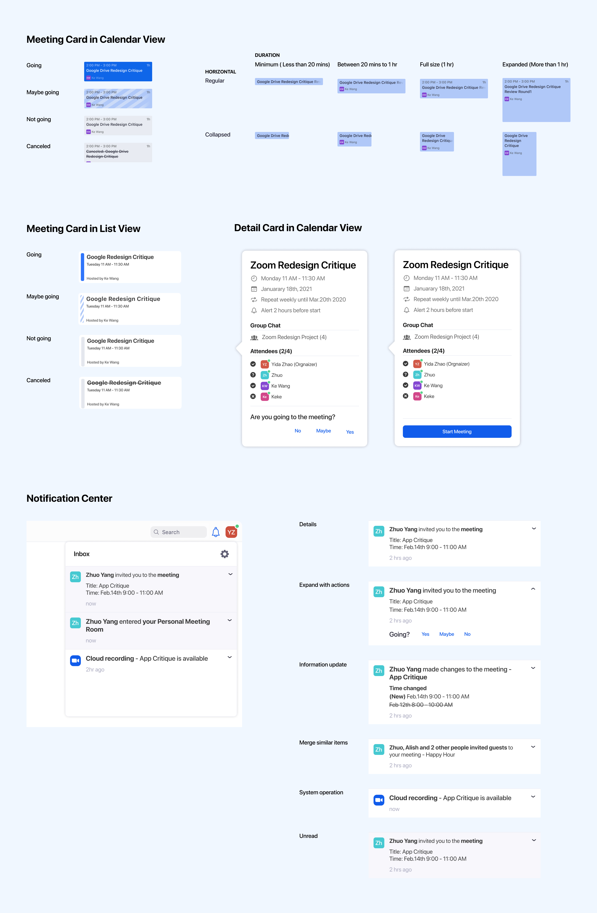
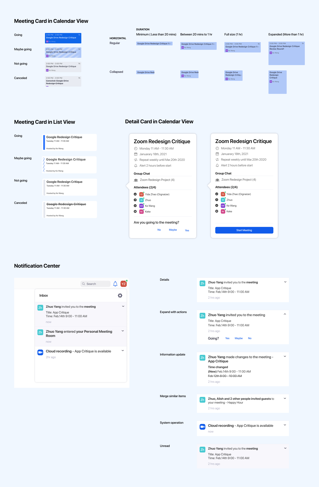

Time:
Jan 2021
Contribution:
Translate primary user research insights into product features; Ideate and sketch; Iterate prototypes; Build design system; Usability test;
Team:
Ke Wang: UX Designer
Yida Zhao: UX Designer
Zhuo Yang: UX Designer
People have virtual meetings in their daily lives almost everyday. If they don’t have the tools to manage their time, they will easily lose track of events. Zoom is a popular platform to arrange video conferences but it does a poor job in scheduling and tracking meetings. Users have to rely on third-party services, which causes inconvenience, inconsistency and mistakes. Thus, we decided to redesign the schedule related functions on Zoom.
The target users of Zoom vary widely, but for now, we want to focus on enterprise members who frequently use Zoom as a collaboration tool. The rationale behind this choice is:
1. From a business perspective, Zoom aims to expand the scale of enterprise users with more than 50 people according to their 2020 Q3 financial report. Thus, improving the user experience for corporate users is one of the priorities.
2. The core functions for modern remote work collaboration tools include email, instant messaging, calendar, collaborative documents and video/call. If Zoom wants to expand its functionality, calendar is the next reasonable step.
The redesigned Zoom has to align with its original product competitive advantages.
After analysis of the current user journey of scheduling a Zoom meeting, we see three usability issues in the journey from scheduling the event to starting the meeting.
Currently, people need to schedule a meeting on Zoom through a calendar system, they will be directed to either iCal or Google Calendar to finish the process.
In our user research, users remarked that they were confused about the jump between different products. Even worse, if users need to update information like change time through the calendar system, the information will be updated on the Zoom app. The inconsistency leads to user confusion and dissatisfaction.
Current Zoom schedule event design
Our solution is to leverage the existing contacts function in Zoom, and let users invite colleagues within the organization all within the Zoom ecosystem. To invite guests from external organizations, users either add them in contacts or type in their calendar and Zoom will send the email automatically.
According to our user research, quite a lot of users share links to guests rather than sending calendar invitations. Sharing meeting links is useful under scenarios where attendees are not known to hosts. However, it’s not convenient for guests who need to manually create an event on the calendar. And hosts can’t receive any feedback like how many people are going to attend or who want to propose a different time.
Current zoom meeting URL related interaction design
We add a series of Call to Action on the jump page and the waiting room. After users click the meeting link, they can add the meeting to their Zoom Calendar, propose another time or inform the host that they’re not going.
AThe meetings list function in Zoom doesn’t link with the user's email so only meetings people scheduled will show in the list. It is not complete so even if people need to track events, they still need to turn to external calendars which is not conducive to user retention. The other problem of the list view is that it’s hard to have an understanding of the time distribution of meetings.
Current Zoom meeting URL related interaction design
An embedded calendar will solve the problems. Besides that, the two features mentioned above both require the calendar feature. Thus, we will build the calendar in Zoom to track Zoom meetings. Users can track events, receive any updates, start the meeting, and indicate their availability to inform others, all in one page.
We build a design system and component library to cover all situations. It’s vital for team collaboration and future development. We try to comply with Zoom current design guide, but also upgrade some outdated designs, like solid black lined input boxes.
 
